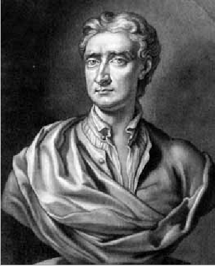

Section 4.1 Historical Introduction
By relieving the brain of all unnecessary work, a good notation sets it free to concentrate on more advanced problems, and, in effect, increases the mental power of the race.―Alfred North Whitehead (1861–1947)
Since the Covid-19 pandemic of \(2020\) the following story has become very popular. In \(1665\) an outbreak of Bubonic Plague (also called the Black Death) closed Cambridge University. One of the students, a young man named Isaac Newton, decided to continue his studies on his own at his country home in Woolsthorpe, Lincolnshire, UK. It was during this time that Newton worked out the basic principles of Optics, his Law of Universal Gravitation, and his version of the Calculus. He was under \(25\) years old at the time.
When you’re a genius you can do that.
The basic facts of this story are essentially correct. The Plague did close Cambridge University in \(1665\text{,}\) Newton was under \(25\text{,}\) he did retire to Woolsthorpe, and he did investigate Optics and Gravitation during this time. The mathematics that he needed did not exist at the time so he invented it. Today we call it Calculus.
But telling Newton’s story this way is misleading. It leaves the impression that he did all of these things during his two years at Woolsthorpe; sewed them up in a neat little package; bequeathed them to the rest of humanity and then ascended directly into heaven as a scientific demi–god.
Aside: Historical Background.

This is not true. In fact, he continued to work on optics after returning to Cambridge, but did not publish his first results until \(1672\text{.}\) He worked on his gravitational theory until at least \(1687\) when he published the first edition of his book Philosophiae Naturalis Principia Mathematica (Mathematical Principles of Natural Philosopy).
Aside: Mathematical Terminology.
Newton’s story is often treated as inspirational but the fact that he did so much, so young seems to us (the authors of this book) more intimidating than inspiring. We are considerably older than \(25\) and taken together we haven’t done anything as impressive as Newton did in his youth.
But comparing ourselves to Newton is pointless. Newton was a true genius. We are merely ordinary people just like you. We didn’t invent Calculus, and you don’t have to either. Newton did that for us. Everyone since has merely had to learn it; a much less imposing task.
Well, almost everyone.
About ten years after Newton entered Cambridge University, and quite independently, Gottfried Wilhelm Leibniz developed his rules for Calculus while employed as a diplomat in Paris from \(1672\) to \(1674.\) He was \(26\) years old at the time.
Though their approaches are fundamentally different, the computational techniques they worked out were essentially equivalent. Newton’s approach was dynamic, like Roberval’s. He was thinking about objects in motion: the moon, the planets, and falling apples. Leibniz was thinking about geometric relationships, more like Fermat or Descartes.
As a matter of pure logic it doesn’t really matter which viewpoint is adopted. However, there are some situations where thinking dynamically (like Newton) is more helpful, and others where thinking geometrically (like Leibniz) is more helpful. Throughout this text we will switch back and forth, adopting whichever approach seems to us more advantageous for a given situation. You should too.
Newton was a private, almost secretive man. At first he didn’t tell anyone about his invention so it was left to Leibniz to publish the first paper on Calculus in 1684. We referred to his paper at the end of Chapter 3:
A New Method for Maxima and Minima, as Well as Tangents, Which is Impeded Neither by Fractional nor Irrational Quantities, and a Remarkable Type of Calculus for This.
From this rather imposing title we can infer that Leibniz was aware that his Calculus would empower mathematicians to more easily solve both old problems (like Snell’s Law) and new problems alike.
In his paper Leibniz displayed all of the General Differentiation Rules you will see at the beginning of the next section. He called his computational rules “Calculus Differentialis” which translates loosely as “rules for differences.” In English this is called Differential Calculus.
Newton and Leibniz each created and used a notation that reflected his own viewpoint. Newton’s notation has (mostly) fallen away over the years. Leibniz’ notation is much more intuitive and has become standard in mathematics.
Both assumed that a varying quantity could be increased or decreased by an infinitely small amount. Leibniz called this an infinitesimal difference, or a differential and denoted it with the letter “d” — presumably for “differential.” So if \(x\) is some quantity, then its differential, \(\dx{x}\text{,}\) represents an infinitely small increase or decrease in \(x.\)
To talk of infinitely small increments may sound strange to you. It does to most people, because it is in fact a truly weird idea. Johann Bernoulli described differentials this way:
“. . . a quantity which is increased or decreased by an infinitely small quantity is neither increased nor decreased . . .”―From “Great Moments in Mathematics After 1650,” Lecture 32
You may judge for yourself how helpful this is. Johann and his brother Jacob both learned Calculus from Leibniz, and both went on to mathematical greatness in their own right.
The idea of an infinitesimal was not new. Before the invention of Calculus mathematicians had been using the notion both successfully, and informally, for many years. Galileo and his students used them. So did Archimedes. The idea was “in the air.”
But the vagueness of the notion was very troubling. In fact, late in his life Newton attempted to repudiate the idea of differentials by founding his version of Calculus on what he called prime and ultimate ratios. Leibniz simply continued the tradition of using differentials and invented the notational formalism that we still use today.
Although neither of them could precisely answer the question, “What is a differential?” neither Leibniz nor Newton allowed this to hold them back. They developed their computational schemes, verified that they worked — at least on the problems they were interested in — and proceeded to use them to attack other problems. That was enough for them. Both men followed the example of their forebears and treated the notion of an infinitely small increment as a convenient fiction. Something that doesn’t exist in reality but is useful as a way to think about certain problems. We will adopt a similar attitude — at least for now.
But this is mathematics. Eventually we will reach a time of reckoning when we must define our concepts clearly and precisely. All of them, not just the convenient ones.
The question “What is a differential?” cannot simply be swept under the rug and ignored indefinitely. Since everything we do will depend in a fundamental way on differentials, we must resolve this question or all of our work will rest on a foundation of shifting sands and we will never really know whether it is valid or not. If we do not proceed carefully, logically, from clearly stated first principles we can never truly know if what we are doing is valid.
Indeed, Newton, Leibniz, and generations of mathematicians since understood this very well and worked hard to either give rigorous meaning to the idea of a differential or to abandon it altogether in favor of some other concept. Newton’s idea of prime and ultimate ratios was probably the first such attempt.
But it took some of the greatest minds in history nearly two hundred years to resolve the question of differentials.
Well, resolve might be too strong a word. The theory of limits, adopted in the late \(19\)th century, doesn’t resolve the matter as much as it simply avoids it altogether. You’ll see what we mean when we come to Chapter 17
In the mid–twentieth century Abraham Robinson (1918–1974) was finally able to develop a solid, rigorous theory to support the notion of a differential. Unfortunately, to do this Robinson required some deep and complex notions from the field of Mathematical Logic which are quite beyond the scope of this text.
Besides, Calculus already had a rigorous foundation. The theory of limits had been established nearly a hundred years before Robinson’s work and it provides an entirely adequate foundation for Calculus. Unfortunately, the theory of limits does very little to help anyone actually use Calculus. It simply provides rigor for the logical foundations. On the other hand the differentials of Leibniz and Robinson do provide aid in using Calculus. Newton, Leibniz, and their contemporaries did truly amazing things by treating differentials as convenient fictions. There is no reason we can’t do the same.
For now we will follow the example of our forbears and develop the Rules For Differences (Differential Calculus) using Leibniz’ differentials. In particular, we will not concern ourselves with the question, “What is a differential?”
There is precedent for this. The ancient Greek mathematician Euclid, (325BC – 265BC) defined geometric points with the phrase “A point is that which has no parts.” But that is simply a clever way of admitting that he didn’t know what points are, despite the fact that they are enormously useful. What is a point, really, but a convenient fiction? And yet the notion of a point is foundational for all of Geometry. After all, what is a line but the relationship between two points? Geometric points are highly intuitive and can be visualized in the mind’s eye as long as we don’t look too closely.
Differentials will play a similar role in Calculus.